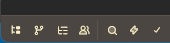
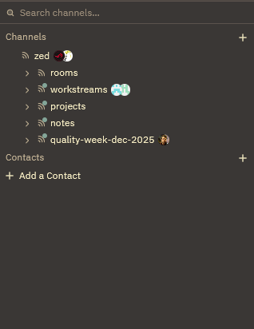
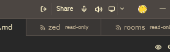

Zed Collaborationについて
ZedのCollaborationの紹介をします。
こんにちは！パン君です。
今回はZedの機能 「Collaboration」 についての紹介になります。
知らずに見た時に人によっては触っていない機能だと思いましたのでここでどういうものなのか軽く説明できればと思います。
概要
下記画像を押下すると

下記画像のパネルが出てきます。(サインインを要求されている場合はサインインを行ってください。Githubアカウントがあれば可能です。)
これが今回お話するパネルです。

これは Collaboration という文字の通り 共同作業 を可能とする機能になります。
因みに公式ドキュメントは下記
zed.devOverview | Collaboration
パネルの中には初期状態だと
- Channels
- Contacts
の二つのカテゴリがあります。
Channels は下記の機能を持っています。
(Zed Doc からの引用を翻訳)
- ペアリング – 一緒に何か作業する場合、両方に独自の画面、マウス、キーボードがあります。
- メンタリング – コードをプッシュアップする際の摩擦なしに、他の人の状況に飛び込んで行き詰まりから抜け出すのを簡単に支援できます。
- リファクタリング – 衝突を恐れることなく、複数の人が大規模なリファクタリングに参加できます。
- 周囲の状況を把握 - ステータスメールや会議を必要とせずに、他の全員が何に取り組んでいるかを確認できます。
加えて ノート という機能があり、チャンネルインスタンス単位で Markdown のノートファイルが編集できます。 チャンネルガイドとして記述したり、アイディアを残しておいたりなど、使い方はそれぞれです。
下記公式引用
各チャネルには、現在のステータスや新しいアイデアを追跡したり、コードに取り掛かる前に作業中の機能の設計を共同で構築したりするための Markdown ノート ファイルが関連付けられています。
Contacts は下記の機能を持っています。
(Zed Doc からの引用を翻訳)
Zed を使用すると、連絡先に登録されているユーザーとプライベート通話やコラボレーションセッションを行うことができます。
これらの通話は、1対1で行うことも、連絡先に登録されているユーザーを何人でも参加させることもできます。
共通仕様
Channels と Contacts 共通している部分であり、Collaboration Panelの主要機能について話します。
どちらでもいいので参加すると Zed IDE 右上に下記画像のような UI が表示されます。

左から簡単に説明すると
- 自身のZed IDE ウィンドウで開いているプロジェクトを共同作業者へリアルタイムで編集権限を含めて共有する
- マイクミュート
- 出力オン無効化 (同時にマイクミュートも行う)
- 画面共有
になっています。
Channels仕様
下記を知っていれば十分だと思います。
- デフォルトはプライベートアクセス
- チャンネル右クリックで招待を押下 -> Githubアカウント名で招待が可能
- 親チャンネルの権限は子チャンネルに引き継がれます。 子チャンネル側でオーバーライド、新規設定を行うと子チャンネル以下のチャンネルはその設定になります。
複数ウィンドウの場合だったり、切り替え時云々みたいな細かい箇所は公式を閲覧ください。
zed.devChannels | Channels
Contacts仕様
これもChannnelsとほぼ同等ですが、違う点を上げるとすると下記くらいなので
利用状況的に最適な方を選べば良いかと思います。
- チャンネルを作成する必要が無い = メンテナンスや管理をする必要が無い
FAQ
Q. 既にZedというチャンネルとサブチャンネルが存在しているけど自分のプロジェクトが見られたりする？
A. これらは Zed公式 がチャンネルを作成して公開されているサンプルのチャンネルになります。
Share状態にしている場合は見られますし、マイクをオンにしていれば音が相手側に聞こえます。画面シェアも同様です。
利用予定がないのであれば UI/UX 的に邪魔になると思いますので、一番親のプルダウンを閉じてコンパクトにしましょう。
Collaboration Panel についてのガイドライン等が チャンネルノートに描かれているので見てみるのもありです。
Q. チャンネルを作成したら他の人に見える？
A. 作成するときに Public 設定にすれば見えてしまいます。
他人に見えたくないのであれば、デフォルトのまま作成 -> 必要な人を招待 としましょう
まとめ
以上がZedのコラボレーション機能でした。
Visual Studio や VSCode、他IDEでもある Live Share のような機能ですが
個人的に Zed の IDE のスペックの事を考えると相乗効果というか、凄く便利に見えています。
画面共有やチャンネルという機能も相まって、まるでディスコードのコミュニティーサーバー上でコーディングを行っているような感覚です。
後は周りの環境が Zed 利用者が多いことを祈るばかりですね...
いなくても十分いい IDE ではありますが、この機能に限って言うと...
それでは快適なZedライフを!